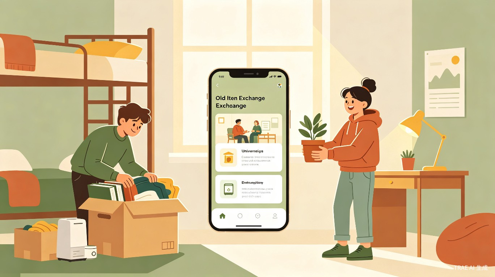
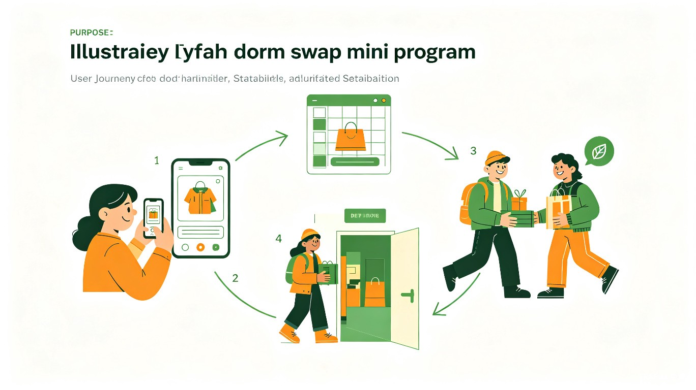

面向校园宿舍的旧物交换小程序 —— 让闲置流动，让温暖传递
宿换是一款面向高校学生宿舍场景的公益性旧物交换小程序，通过低门槛的数字化工具，让宿舍内的闲置物品在同学之间高效流转，减少资源浪费，同时以交换为纽带促进宿舍社区的人际连接。
高校宿舍是物品更替最频繁的微型社会之一。每届毕业生留下大量仍可使用的物品，新生入学又需要购置诸多生活用品，中间存在巨大的"资源错配"。传统的处理方式——丢弃或低价卖给回收站——既造成浪费，也切断了物品承载的情感价值。
与此同时，当代大学生对可持续生活方式的认同度持续上升，但缺乏便捷的校内交换渠道。闲鱼、转转等二手平台面向全社会，交易链路长、信任成本高，并不适配宿舍楼层间"今天发布、明天取走"的即时需求。
宿换的设计哲学建立在三个支点之上：零废弃——延长物品生命周期，减少校园垃圾产出；零门槛——不以金钱为媒介，降低参与成本；零距离——基于宿舍楼栋的地理围栏，让交换像串门一样简单。
大四或研三学生，面临离校，需要快速处理大量宿舍物品。核心诉求：省时、省心、让物品有个好去处。对价格不敏感，更在意物品能否被需要的人继续使用。
大一新生或刚换校区的学生，需要购置各类生活用品但预算有限。核心诉求：低成本获取质量可靠的二手物品，同时希望了解学长学姐的使用经验。
对可持续生活方式有主动认同的学生，愿意花时间参与旧物交换。核心诉求：找到志同道合的交换伙伴，获得环保行为的正向反馈。
性格开朗、乐于在宿舍楼内建立人际网络的学生。核心诉求：通过交换活动认识新朋友，丰富校园社交生活。
小林即将毕业，宿舍里堆着三年来积攒的书籍、台灯、收纳盒和一盆长势良好的绿萝。她在宿换上批量发布这些物品，设置"免费赠送"或"以物易物"模式。同楼的学妹通过分类浏览发现这盆绿萝，用一本小说交换。两人在楼道里完成交接，绿萝继续陪伴下一届主人。
大一新生小王刚入学，需要购买台灯、插线板、衣架等基础用品。他在宿换上筛选"宿舍楼栋=自己所在楼"的物品，发现同层学长发布的免费台灯和五元插线板。通过小程序内置的即时沟通确认细节后，他上楼敲门自取，整个过程不超过十分钟。
女生宿舍的小张换季整理衣柜，发现几件只穿过一两次的衣服。她在宿换上发布"衣物交换"需求，标注尺码和风格偏好。同楼另一位同学用一条围巾换走一件毛衣，两人在交换时聊起了穿搭心得，意外成为朋友。

用户通过拍照或从相册选择上传物品图片，系统自动识别物品类别（书籍、电子产品、衣物、生活用品等）并推荐标签。支持三种交换模式：
基于学校宿舍区的地理信息，系统自动将用户划入对应的宿舍楼栋圈层。默认展示同楼栋物品，可手动扩展至同校区。这一设计大幅降低了交换的物流成本，也让"顺路取一下"成为常态。
每位用户拥有"宿换信用分"，基础分100分。按时完成交换、获得好评加分；爽约、物品描述严重不符则扣分。信用分低于阈值将限制发布权限。评价维度包括：物品如实度、沟通友好度、交换守时度。
每次成功交换都会积累"绿叶积分"，积分可兑换校园合作商家的优惠券，或捐赠给小程序合作的环保公益项目。同时设置成就体系："初次交换""环保达人""宿舍百宝箱""毕业季天使"等徽章，增强用户粘性。
交换地点限定在宿舍楼公共区域（大厅、洗衣房等），系统提供"交换码"功能——双方确认见面时出示动态验证码，防止冒领。用户可选择仅展示楼栋号而不展示具体房间号，沟通环节通过小程序内置聊天完成，无需暴露个人微信。
| 功能模块 | 优先级 | MVP版本 | 后续迭代 |
|---|---|---|---|
| 物品发布与浏览 | P0 | 基础拍照发布、分类浏览 | AI智能识别、批量发布 |
| 楼栋地理围栏 | P0 | 手动选择楼栋 | LBS自动定位、校区地图 |
| 即时沟通 | P0 | 内置文字聊天 | 语音、交换预约日历 |
| 信用评价 | P1 | 基础评分 | 信用分体系、违规处理 |
| 公益积分 | P1 | 积分记录 | 兑换商城、公益捐赠 |
| 社区运营 | P2 | — | 话题圈子、线下活动 |
宿换以公益为初心，但长期运营需要可持续的成本覆盖机制。我们设计了"轻商业化"路径，确保商业行为不损害用户体验和公益属性。
与校园周边餐饮、文具、打印店等商家合作，将商家优惠券作为绿叶积分的兑换奖品。商家获得精准的大学生客流，平台获得合作费用或资源置换。
针对毕业季推出"宿舍清仓套餐"：大件物品上门搬运、跨校区物品转运、旧衣环保回收等付费服务。基础交换永远免费，增值服务按需付费。
申请环保类公益基金会的项目资助，将平台运营数据（减少的废弃物重量、参与人次等）作为影响力报告的核心指标，获取资金支持。
与学校后勤处、学生处合作，将宿换纳入新生入学指南和毕业离校流程。学校获得绿色校园建设成果，平台获得官方背书和用户入口。
主要成本包括：小程序服务器与云存储费用（约每月500-2000元，随用户量增长）、内容审核与客服人力（初期可由志愿者团队承担）、市场推广费用（以校园地推为主，线上为辅）。整体而言，宿换是一个"轻资产、重运营"的项目，技术门槛不高，核心壁垒在于校园社区的运营深度。
| 产品 | 定位 | 优势 | 劣势 | 宿换的差异化 |
|---|---|---|---|---|
| 闲鱼 | 全品类C2C二手交易 | 用户基数大、品类全 | 交易链路长、信任成本高、不适合小额免费赠送 | 聚焦宿舍场景，零金钱门槛，即时交换 |
| 转转 | 二手电子产品为主 | 质检体系完善 | 品类偏窄、校园渗透弱 | 全品类覆盖，公益属性，社区氛围 |
| 校园BBS/微信群 | 校内信息发布 | 零成本、熟人信任 | 信息散乱、检索困难、无法沉淀信用 | 结构化信息、信用体系、可持续运营 |
| 多抓鱼 | 二手书循环 | 品牌调性好、用户体验佳 | 仅限书籍、需邮寄 | 全品类、线下即时交换、宿舍场景 |
宿换的核心竞争力不在于技术，而在于场景聚焦和社区运营。当用户打开宿换时，看到的不是茫茫多的陌生人商品，而是"同楼同学今天发布了什么"——这种亲近感和即时性是大型平台无法复制的。
选择1-2所合作意愿强、宿舍集中的高校作为试点。每校招募5-10名"宿换大使"（热心公益、有影响力的学生），负责线下推广和初期内容填充。通过"毕业季清仓"活动集中引爆——在毕业生离校前两周集中推广，快速积累首批优质物品和用户。
graph LR
A[毕业生发布闲置] --> B[新生/在校生获取物品]
B --> C[良好体验]
C --> D[主动发布自己的闲置]
D --> E[更多物品供给]
E --> A
定期发布"交换故事"栏目，讲述用户通过宿换发生的有趣经历或暖心故事。例如："我用一本《高等数学》换到了一盆多肉，还认识了一个考研搭子"。真实的故事是最好的传播素材，也是社区氛围的粘合剂。
宿换采用微信小程序作为核心载体，原因如下：大学生微信渗透率接近100%，小程序无需下载、即用即走，完美契合低频但刚需的交换场景。
| 层级 | 技术方案 | 说明 |
|---|---|---|
| 前端 | 微信小程序原生框架 / Taro | 保证性能与微信生态深度融合 |
| 后端 | Node.js + Express / 云开发 | 快速迭代，降低运维成本 |
| 数据库 | MongoDB / 微信云数据库 | 灵活的文档结构适合物品信息存储 |
| 存储 | 腾讯云COS / 微信云存储 | 图片与静态资源托管 |
| AI识别 | 腾讯云图像识别API | 物品分类与标签推荐 |
完成小程序基础功能开发（发布、浏览、沟通、评价）。选择1所高校试点，招募宿换大使，通过毕业季活动获取首批1000名注册用户。核心指标：日活用户≥200，交换成功率≥60%。
将试点经验沉淀为标准运营手册，扩展至3-5所高校。上线信用积分系统和公益积分商城。与首批校园商家达成合作。核心指标：覆盖高校≥5所，累计用户≥1万，月交换单量≥3000。
在单个城市（如北京、武汉等高校密集城市）实现10所以上高校覆盖。推出毕业季增值服务。申请环保公益基金支持。核心指标：区域高校覆盖率≥20%，实现运营成本自给。
建立城市合伙人机制，由本地学生团队负责各校运营。上线社区功能（话题、圈子、线下活动）。探索与高校后勤系统的深度系统对接。核心指标：覆盖高校≥100所，注册用户数≥50万。
风险：双边市场困境，没有物品就没有浏览者，没有浏览者就没有人发布物品。
应对：毕业季是天然的供给高峰，集中资源在这一时段引爆；初期由运营团队手动搬运校内BBS/微信群的信息，填充内容。
风险：用户交换到损坏或与描述不符的物品，甚至发生线下交易纠纷。
应对：建立信用评价体系和举报机制；鼓励交换时当面验货；高风险品类（电子产品）提供可选的"交换担保"服务。
风险：部分学校对商业类小程序进入校园持谨慎态度，或限制学生线下聚集。
应对：强调公益属性，以"绿色校园"建设成果对接学校后勤和宣传部门；避免任何强制收费项目。
风险：闲鱼、转转等平台推出校园版或宿舍专区，以资源优势挤压生存空间。
应对：深耕社区运营和情感连接，建立品牌认同；与学校建立官方合作关系，形成排他性壁垒。
技术团队可采用兼职或外包方式降低成本，运营负责人建议为全职。每所高校配备2-3名学生志愿者作为"宿换大使"。
| 项目 | 金额（元） | 说明 |
|---|---|---|
| 小程序开发 | 30,000 - 50,000 | MVP版本外包或兼职开发 |
| 服务器与云服务（首年） | 10,000 - 20,000 | 按用户量弹性扩展 |
| 校园推广（首年） | 15,000 - 30,000 | 物料、活动、大使补贴 |
| 运营人力（首年） | 60,000 - 120,000 | 1名全职运营，视城市而定 |
| 合计 | 115,000 - 220,000 | 首年启动资金 |
宿换的起点很小——只是让宿舍里的旧物多一种去处。但它背后连接的是一代年轻人对可持续生活的态度、对社区温度的渴望，以及对"消费不等于拥有"这一理念的实践。
在公益赛道上，宿换不是最宏大的项目，却可能是离大学生最近、最能激发日常参与感的一个。当一届届学生通过宿换传递物品、建立连接、延续故事，这个平台就不仅仅是一个工具，而会成为校园集体记忆的一部分。